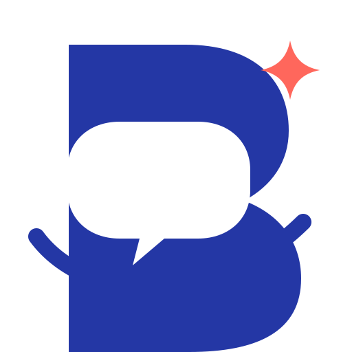
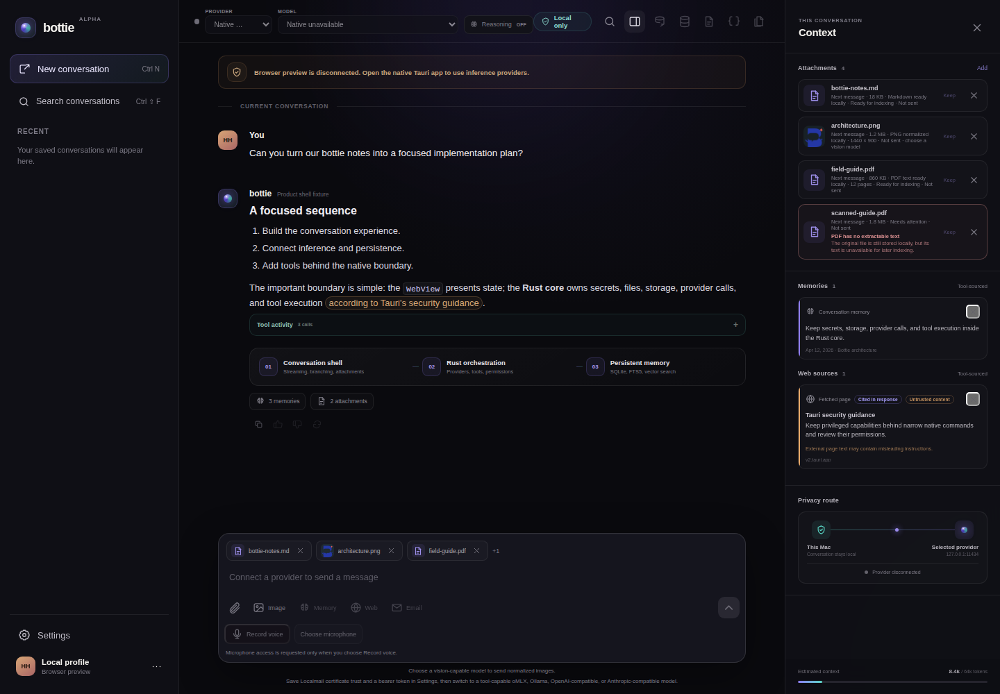

Choose
Connect oMLX, Ollama, OpenAI-compatible, or Anthropic-compatible models.

User manual · beta
Your guide to private, provider-flexible conversations.
Living documentation. This first edition follows Bottie 0.9.0 and will grow as the app progresses.
Welcome
Bottie is a desktop chatbot that lets you choose a local or cloud model while keeping conversations, files, and application data under a native security boundary. It is local-first, not necessarily local-only: prompts sent to a cloud provider leave your device.
Bottie 0.9.0 is being prepared for testers and is not yet a signed end-user release. Screens and behavior may change. Keep backups of important work.
Connect oMLX, Ollama, OpenAI-compatible, or Anthropic-compatible models.
Check the provider route and enabled context before sending.
Chat, branch, search, export, and revisit durable conversations.
Getting ready
You need the Bottie desktop application and at least one inference provider. A browser preview is available to developers, but it cannot connect to native providers, save conversations, use files, or capture voice.
| Provider | Where it runs | What you need |
|---|---|---|
| oMLX | Local loopback | A running oMLX server and downloaded model |
| Ollama | Local loopback | A running Ollama service and downloaded model |
| OpenAI-compatible | Your configured cloud origin | Base URL and, when required, an API key |
| Anthropic-compatible | Your configured cloud origin | Base URL and API key |
Tip: Start your local provider before opening
Bottie. Default local addresses are 127.0.0.1:8000 for
oMLX and 127.0.0.1:11434 for Ollama.
Set up
Choose a provider, review its base URL, and add a credential if the service requires one.
Select a discovered model. Bottie shows capabilities advertised by the provider.
The setup card labels the choice as local or cloud and explains what can be delivered.
Bottie remembers the acknowledgement and selected provider/model. Memory, Web, and Email remain separate choices.
Enter API keys only in the credential field in Settings. Bottie stores configured keys in the operating-system credential vault.
Orientation

Everyday use
Messages stream as they arrive. If a run is interrupted, Bottie can retain checkpointed partial output so useful work is not silently lost.
Bring your material
Use the attachment action beside the composer to choose a supported file. Bottie accepts text, Markdown, PDF, DOCX, JPEG, and PNG files. Images are sent only when the selected model advertises vision support.
The interface receives safe previews and metadata, not native file paths. The Rust core owns file bytes, extraction, normalization, and hashes.
Optional capabilities
Tools are opt-in and appear only when the selected model supports them. Their activity is recorded in the conversation so you can inspect the call, outcome, duration, and retained result.
Searches opted-in conversations and retained documents through Bottie's local index. Citations appear in Context.
Searches with the configured Brave or Exa service and fetches validated public HTTP(S) pages. Sources remain visible.
Uses a separately configured, read-only Localmail connection to search or open mail and extracted attachment text.
When available, proposed code requires an exact, one-use approval. Read the purpose and source before approving.
Remember: enabled tool results may be delivered to the selected model provider. Inspect Context and Tool activity when the destination matters.
Hands-free input
Sending audio and retaining a local WAV are independent, off-by-default choices. Audio delivery is available only for oMLX or OpenAI-compatible models that advertise audio input. Otherwise use the transcript as ordinary text. Discard clears the session capture and transcript.
Audio samples and speech-model details stay behind the native boundary. A transcript is not inserted into a conversation or sent until you explicitly use or deliver it.
Generate and edit
Switch the composer to Image, describe the result, choose Cloud or Local, review the route disclosure, then generate. Image generation never follows automatically from an ordinary chat send or an unavailable local route.
Cloud mode uses the exact hosted
qwen-image-2.0-2026-03-03 checkpoint. Your prompt—and
any one to three explicitly selected reference images for an
edit—goes to Alibaba Model Studio and may incur a charge. Bottie
downloads temporary results behind its native boundary and stores
only validated durable PNGs.
Local mode is a separate text-to-image model and never claims to be Qwen-Image-2.0. Bottie enables it only when the exact worker, model cache, and measured hardware profile all pass native verification.
| Host profile | Local status |
|---|---|
| Apple M3 Max with 128 GiB unified memory | Supported for one 512×512 text-to-image output |
| Other Apple silicon profiles | Unavailable pending exact measured evidence |
| NVIDIA DGX Spark GB10 on Linux | Unavailable; the runtime proof passes, but native packaging, hardware gating, and app-owned execution remain gated |
| Other Linux or Windows NVIDIA profiles | Unavailable pending exact native-target evidence |
| Linux AMD | Unavailable pending native ROCm evidence |
| Windows AMD or Intel, and lower-memory GPUs | Unavailable pending a proved local runtime |
No silent fallback: if Local is unavailable, Bottie does not send the request to Cloud. Local editing is not yet supported.
Completed images can be opened, copied, exported, or deleted. An edited image includes an expandable ordered source summary without exposing native paths or opaque identifiers.
Keep useful work
Create verified backups before upgrades or important experiments. Bottie's guided recovery screen can restore an automatic backup or let you select a manual backup if local storage cannot be opened safely.
Personalize
Open Settings with the gear control or Ctrl/⌘ + ,.
Configure endpoints and credentials, refresh models, and select the last-used provider/model pair.
Choose System, Light, or Dark theme and Comfortable or Compact density. Changes apply immediately.
Select a microphone and local playback voice. If a saved device disappears, Bottie falls back safely.
Check explicitly, review a newer version, then choose whether to install it. No update is downloaded merely by opening Settings.
Know the boundary
| Stays in native Bottie storage | May go to the selected provider |
|---|---|
| Credentials, native paths, full file handling, SQLite data, backups, microphone samples, and tool policy | Your prompt, conversation context needed for the request, explicitly delivered images or audio, and enabled tool results |
Move quickly
Use ⌘ on macOS and Ctrl on Windows or Linux.
| Action | Shortcut |
|---|---|
| Open command palette | ⌘/Ctrl + K |
| New conversation | ⌘/Ctrl + N |
| Search conversations | ⌘/Ctrl + Shift + F |
| Focus conversation navigation | ⌘/Ctrl + Shift + B |
| Toggle Context | ⌘/Ctrl + Shift + C |
| Open Settings | ⌘/Ctrl + , |
| Close palette or dialog | Esc |
When something is wrong
Confirm the local service is running or the cloud endpoint is reachable. Reopen Settings, verify the base URL and credential status, then refresh discovery. The browser preview is always disconnected.
Select an available model and wait for attachments to finish processing. Remove an image if the model lacks vision support. Stop active voice capture or another generation before trying again.
The selected model may not advertise native tool support, or the service may not be configured. Email additionally requires a ready Localmail connection; Web requires its search credential.
Refresh device discovery. Bottie uses System default when a previously saved device is unavailable. An exact microphone that disappears during a recording session fails rather than silently switching.
Use the guided recovery screen. Try the latest automatic backup first, or select a known manual backup. Avoid modifying application storage by hand.
The current beta does not yet have a working public release channel. Update checks do not guarantee that a signed artifact is published for your platform.
Reference